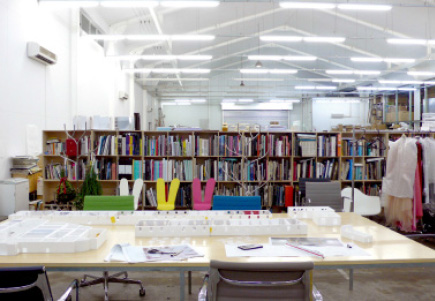

Wir streben nach Einfachheit und Klarheit, auch wenn der Weg dorthin komplex ist. Intensive Auseinandersetzung mit den Nutzern und deren Anforderungen, sowie dem Ort und dessen Identität stehen am Beginn jedes Projekts. Vorausschauender Blick in Richtung möglicher Veränderungen in Funktion und Umwelt, als flexible Parameter in der Planung. Ziel ist es das ideale Maß der Architektur zu entwickeln, welches der Nutzung, dem Anspruch, dem Ort und auch dem vereinbarten Budgets entspricht.
→ Download Studio-Profile

-
Dipl.-Ing. Ira Simone Schnadenberger -
Dipl.-Ing. Katrin Brünjes -
Collaborators -
Auszeichnungen -
Publikationen